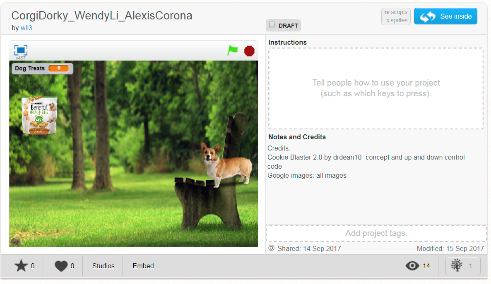
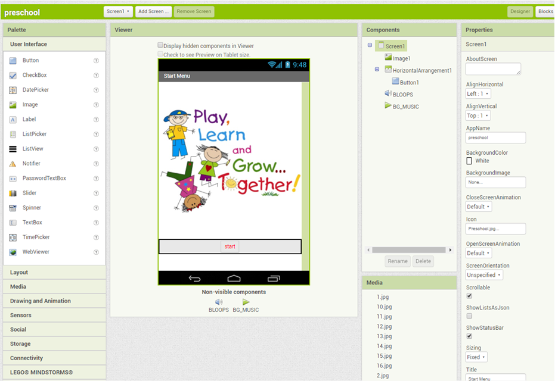

This is a Scratch Starter Project remix of the "Greeting Card". Initially, the card was a birthday card but Alexis Corona and I changed it to a "I Love Boba" card. In additon, the other changes include changing the cake into a squirrel and changing the color/font size. This is a fun and interactive card that is sure to brighten your day!
This is my Scratch Project called CorgiDorky. Alexis Corona and I made this game to relive peoples stress. The objective of this game is to feed the corgi until it dies and goes to corgi heaven. To control the movements of the dog treat bag, press the "up" or "down" arrow on your key board. Every treat is worth ten points. Try out this game!
Using App Inventor, Jeff Chen and I made a preschool learning app. The intended audience for this app are preschoolers, so we made the app easy to understand and use.The features include colors, alphabet, numbers, and reading to help preschoolers learn life skills. For example, If you want to learn more about colors then click on it on the selection screen and it will take you to a screen about primary and secodary colors. This is a great way to start encouraging young children to learn more. The foundation of learning begins in preschool.